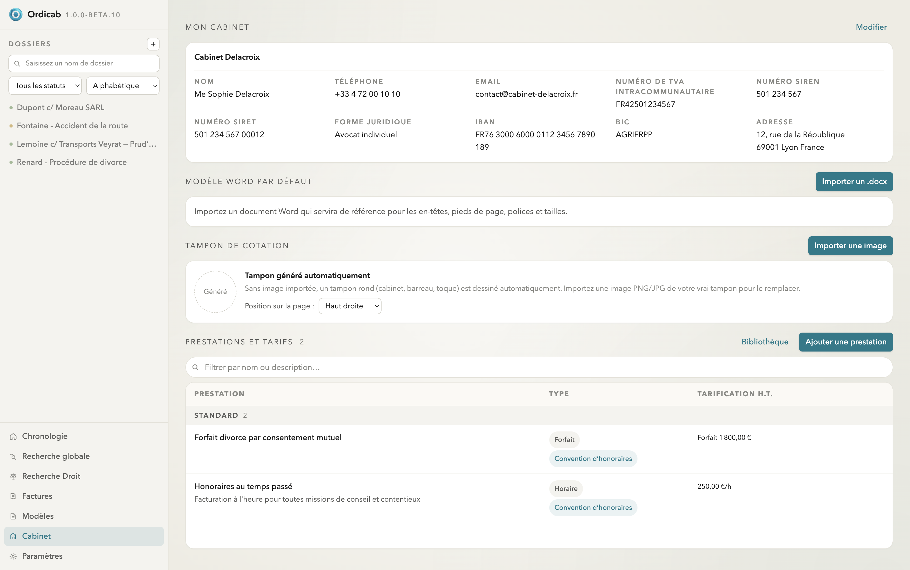
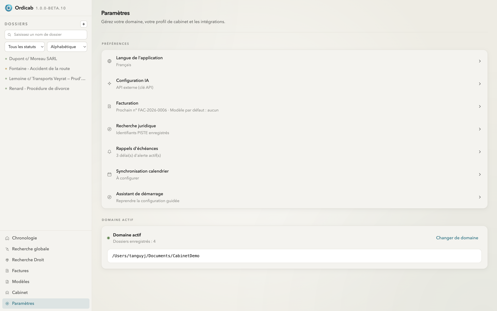

Cabinet & paramètres
Le cabinet est la base de référence d'Ordicab : votre identité professionnelle, votre catalogue de prestations et de tarifs, et la mise en forme de vos documents. Ces éléments sont partagés par tous vos dossiers.
Identité du cabinet
La section Mon cabinet regroupe les informations de votre structure : nom, avocat, téléphone, email, numéro de TVA intracommunautaire, SIREN/SIRET, forme juridique, IBAN/BIC et adresse. Elles servent d'en-têtes de courriers, de coordonnées de facturation et de variables pour la génération de documents.

Cabinet — identité, modèle Word par défaut, tampon de cotation et catalogue de prestations & tarifs
Modèle Word par défaut
Importez un document Word (.docx) de référence : Ordicab en reprend les en-têtes, pieds de page, polices et tailles pour mettre en forme les documents qu'il génère. Vos courriers gardent ainsi l'identité visuelle du cabinet.
Tampon de cotation
Pour la communication de pièces, Ordicab dessine automatiquement un tampon de cotation rond (cabinet, barreau, toque). Vous pouvez aussi importer une image PNG/JPG de votre vrai tampon et choisir sa position sur la page.
Prestations & tarifs
Construisez votre catalogue de prestations réutilisable : chaque entrée porte un type (forfait, horaire…) et une tarification (montant forfaitaire ou taux horaire). Ce catalogue accélère la saisie des prestations dans les dossiers et le calcul des honoraires. Une bibliothèque de prestations types est fournie pour démarrer.
Paramètres de l'application
La page Paramètres rassemble les préférences transverses :
- Langue de l'application ;
- Configuration IA — modèle local ou clé API externe (voir Intelligence artificielle) ;
- Facturation — numérotation des factures et modèle par défaut ;
- Recherche juridique — identifiants PISTE pour Légifrance/Judilibre ;
- Rappels d'échéances — délais d'alerte ;
- Synchronisation calendrier ;
- Domaine actif — l'emplacement du dossier de données et le nombre de dossiers enregistrés.

Paramètres — préférences du cabinet, intégrations et domaine actif
Suivant : Agenda & chronologie →